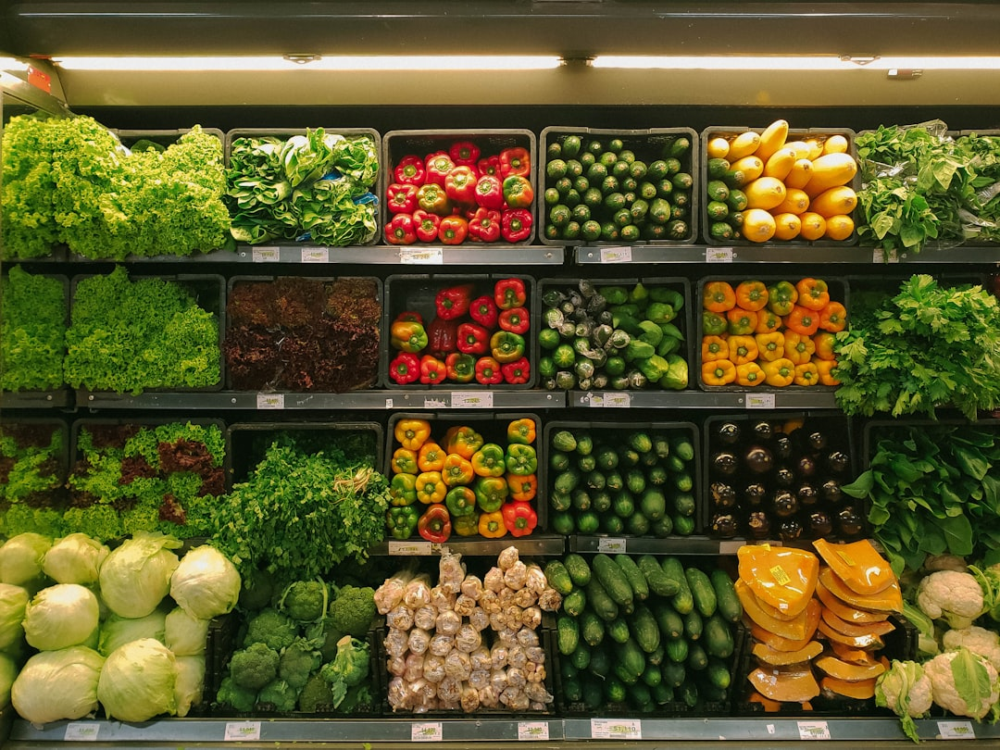

An apple is a crisp and juicy fruit, typically round in shape, with a firm outer skin that can vary in color from shades of red, green, to yellow. Beneath its vibrant exterior lies a succulent flesh, which ranges from sweet to slightly tart in flavor, depending on the variety. Rich in essential nutrients like fiber, vitamins, and antioxidants, apples are not only delicious but also contribute to a healthy diet. Whether enjoyed fresh as a refreshing snack or incorporated into various culinary creations such as pies, salads, and sauces, apples are a versatile and beloved fruit cherished for their taste and nutritional benefits.
Baby clothes are specially designed garments tailored to fit the delicate and growing bodies of infants and toddlers. Crafted from soft, breathable fabrics such as cotton or organic blends, these clothes prioritize comfort and safety for the little ones. They come in a variety of adorable designs, including onesies, rompers, pajamas, and dresses, often adorned with cute patterns, playful prints, and charming details like bows or buttons. With practical features like snap closures and elastic waistbands, baby clothes make dressing and diaper changes hassle-free for parents. Whether it's for everyday wear, special occasions, or cozy bedtime snuggles, these tiny outfits provide both style and functionality for the newest members of the family.
Breakfast, often hailed as the most important meal of the day, is a morning ritual that kick-starts the body and mind with nourishment and energy. It typically consists of a variety of foods ranging from hearty staples like eggs, bacon, and toast to lighter fare such as cereal, yogurt, and fruit. Breakfast choices vary greatly depending on cultural preferences and individual tastes, with options for savory or sweet flavors. Whether enjoyed leisurely at home or grabbed on the go, breakfast provides essential nutrients like carbohydrates, protein, and vitamins essential for fueling the body and enhancing cognitive function. Beyond its nutritional benefits, breakfast also serves as a social occasion, bringing family and friends together to share a meal and start the day on a positive note.

Cornflakes are a popular breakfast cereal made from toasted flakes of corn, offering a crunchy and satisfying texture. Created by lightly processing corn kernels, they are often fortified with vitamins and minerals, making them a nutritious choice to start the day. Cornflakes are known for their versatility, as they can be enjoyed with cold milk, yogurt, or even as a topping for desserts like ice cream or yogurt parfaits. With their subtle sweetness and subtle corn flavor, cornflakes appeal to both children and adults alike, providing a quick and convenient breakfast option that is both tasty and wholesome.
Vegetables are nature's nutritional powerhouses, offering an array of vitamins, minerals, and fiber essential for maintaining good health. From vibrant greens like spinach and kale to colorful root vegetables such as carrots and beets, there's a vast variety to choose from, each with its unique taste and texture. Whether eaten raw as crunchy snacks, steamed as side dishes, or incorporated into hearty soups and salads, vegetables play a vital role in a balanced diet. Not only do they provide essential nutrients, but they also contribute to overall well-being by promoting digestion, supporting immune function, and reducing the risk of chronic diseases. With their versatility and health benefits, vegetables are a cornerstone of nutritious eating and a delicious addition to any meal.
Fruits are nature's sweet treasures, bursting with flavor, color, and vital nutrients. From succulent berries like strawberries and blueberries to juicy tropical delights such as mangoes and pineapples, the variety of fruits available is both vast and diverse. These delicious gifts from the earth are not only palate-pleasing but also rich in essential vitamins, minerals, and antioxidants crucial for maintaining optimal health. Whether enjoyed fresh as a snack, blended into refreshing smoothies, or incorporated into decadent desserts, fruits offer endless culinary possibilities. With their natural sweetness and refreshing qualities, fruits add vibrancy and vitality to any diet, making them an indispensable part of a balanced and wholesome lifestyle.